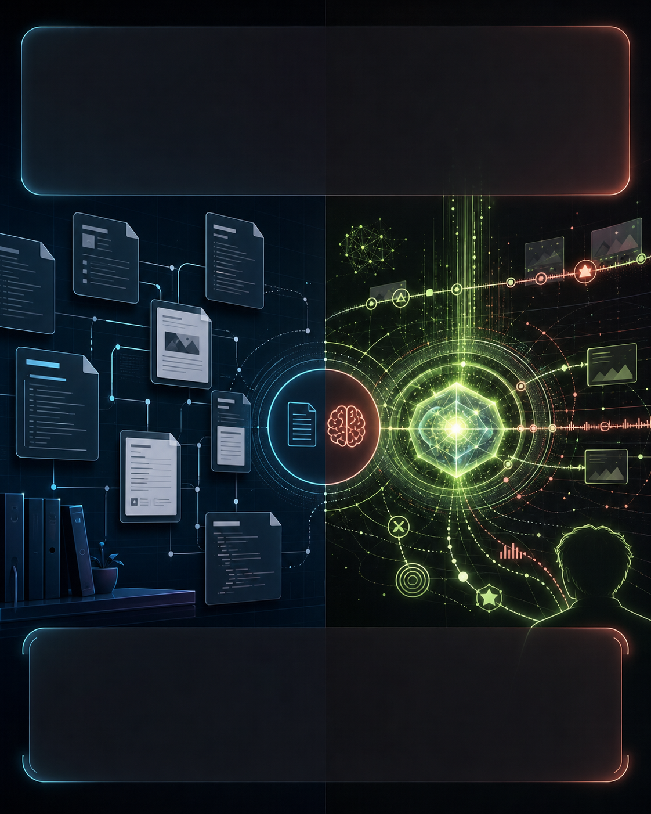

把资料、规则、项目决策沉淀成可检索、可编辑、可引用的 Markdown 知识页。
外部知识库
可审计
适合协作
别再只把 AI 当聊天框。下一代 Agent 需要一本会长大的知识库，和一个能记住上下文的大脑。

把资料、规则、项目决策沉淀成可检索、可编辑、可引用的 Markdown 知识页。
把偏好、上下文、任务状态变成 Agent 可调用的长期记忆层。
会议、项目、灵感、参考案例，都沉淀成结构化 Markdown 页面。
你的审美偏好、写作语气、工作流程，让 GBrain 长期记住。
下次做策划、写文案、整理复盘，不用反复交代背景。